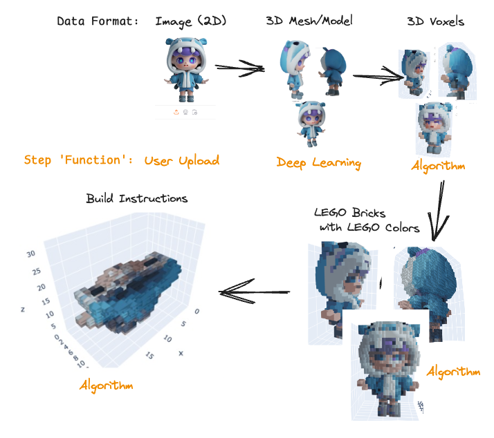
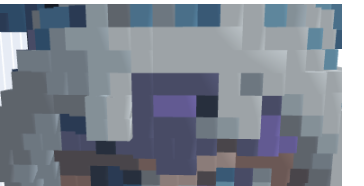
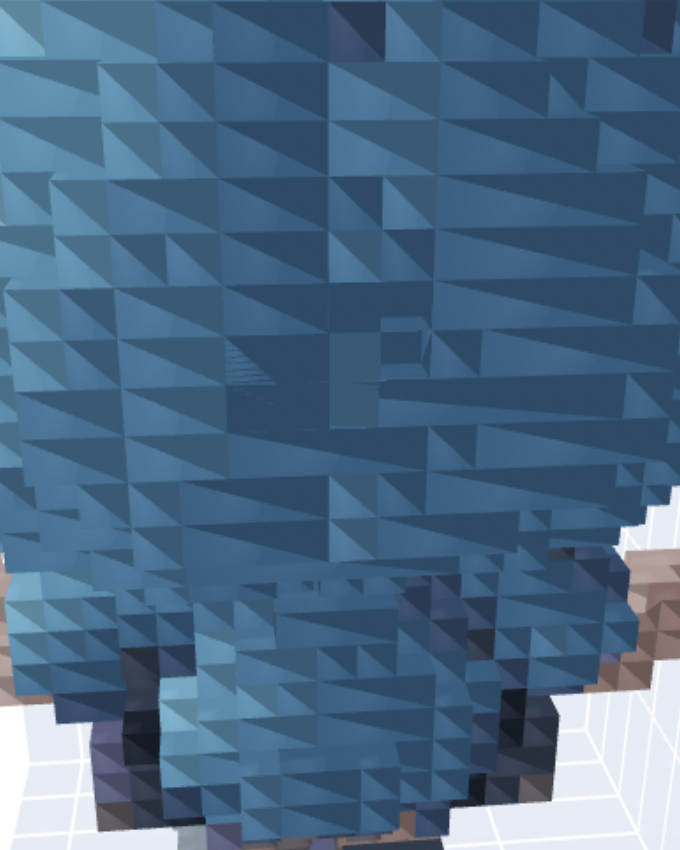

Merry Christmas, Happy Holidays and a Good New Year! 🥳
Disclaimer: I’m not affiliated with LEGO and this is a personal project.
Ever wished you could turn a photo into a LEGO masterpiece? This holiday season, while my son napped, I did!
I’ve been passionately working on what might be my most entertaining project since I built my own Baby Monitor (1, 2): a tool that transforms any image into a buildable 3D LEGO model, complete with layer-by-layer instructions, basically like a real LEGO set!
The idea had been brewing in my mind for a few years, but a recent request from my friend Oscar J finally gave me the motivation to bring it to life!
Result / Demo
I built an Gradio application, mainly as a learning excercise. Usually I prefer Streamlit or Solara for my applications, but Gradio is growing fast and I wanted to try it in a “real project”.




Not to brag, but the results are quite magical in my opinion.
Intrigued? Keep reading to learn how I built this image-to-LEGO generator!
Project Layout
My first step was to research existing solutions. While there are tools for image-to-3D model conversion and voxelization, I couldn’t find anything specifically to build LEGO models with accurate, buildable bricks and “instructions”. This meant I had to build most of the pipeline from scratch. Here’s the steps I identified:
- Turn image into 3D object (Deep Learning): Use a deep learning model to generate a 3D mesh from a single 2D image.
- Voxelize Mesh (Algorithmic): Convert the 3D mesh into a voxelized representation, essentially breaking it down into cubes.
- Colorize Voxels with LEGO approved colors (Algorithmic): Map the colors of the voxels to the closest matching colors from a predefined LEGO color palette.
- Merge Voxels into LEGO sized bricks (Algorithmic): Combine adjacent voxels into standard LEGO brick shapes, optimizing for larger bricks while preserving the overall shape.
- This involves finding the right balance between using larger, more efficient bricks and accurately representing the details of the original model.
This list might make it sound easy, but it really is an interesting and challenging problem!
Image to Mesh: From 2D Photo to 3D Model
Getting from a single 2D image to a 3D model isn’t exactly a walk in the park. Traditionally, people have done this by algorithmically stitching together a bunch of photos taken from different angles, creating a 3D point cloud.
That multi-image approach might work for professionals, but for your average LEGO builder? I don’t think so.
It’s a hassle to take all those photos, and getting them to stitch together correctly? Not fun.
I wanted a smoother experience, one where you can just use a single image to get your 3D model, and that’s why I went with deep learning. Basically, you train a model on tons of images and their corresponding 3D models. Then, when you give it a new image, it can make educated guesses about the 3D shape, even the parts you can’t see. We’re shifting the heavy lifting of data collection from the user during the model’s use to the training phase, which makes things much easier. For this project I’m using a two-step process:
- Generate Multi-View Images: A diffusion model takes the single input image and generates multiple views of the object as if it were photographed from different angles.
- Reconstruct 3D Mesh from Multi-View Images: Another deep learning model takes these generated views and creates a coherent 3D mesh, essentially filling in the gaps between the different perspectives.
It’s not perfect, and the model might struggle with unusual objects or bad lighting. But, it’s a lot better than manually stitching images, and it gets us closer to that one-click LEGO dream. Now, with a 3D mesh in hand, we can move on to the next steps!
A sweet bonus is that we can build our dataset inside Game Engines very easily! Combining real data and synthetic data built in a Game Engine is perfect and makes it easy to have a great dataset.
Steps for a Deep Learning approach
How do we actually turn a image into a mesh through Deep Learning? The idea is quite straight-forward and people without knowledge should understand what is happening under-the-hood, though not mathematically.
Step 1: Turn image into multi-angle images
To get around the need for multiple input images, the first step in my approach is to generate them artificially. We use a Diffusion Model for this. This model is able to look at your single image and create new images of the same object, but from different angles, by generalizing from a large diverse dataset that it has trained on.
Step 2: Generate mesh (model) from multi-angle images
With the generated multi-angle, e.g. 6, images we stitch/generate a mesh structure to work with through another Deep Learning Model! The model at hands needs to fill the sparse data into a 3D mesh. This can be done in multiple ways depending on how you’d like to define the resulting mesh.
Once we have our 3D mesh we can head to the next step, i.e. voxelation.
Step 3: Mesh to Voxels
This is a “solved” problem and it’s easy to voxelize using trimesh, a python library. Trimesh delivers the voxels, or cubes, in grey-scale and we need to add colors ourselves.
def voxelize(mesh_path: str | Path, resolution: int):
"""Voxelize the mesh based on a resolution parameter. Resolution is how many bricks it should contain, i.e. 16 creates a 16x16 base plate."""
mesh = trimesh.load(mesh_path)
bounds = mesh.bounds
voxel_size = (bounds[1] - bounds[0]).max() / resolution # pitch
voxels = mesh.voxelized(pitch=voxel_size)Step 4: Colorize Voxels
With the voxels in place, we need to color them. We start by assigning each voxel the ‘true’ color from the original mesh, found by identifying the nearest point on the mesh’s surface to the voxel’s center. That is the color won’t be an “approved” LEGO color for now.
def tree_knearest_colors(mesh, voxels):
tree = cKDTree(mesh.vertices)
_, vertex_indices = tree.query(voxels.points, k=1)
return mesh.visual.vertex_colors[vertex_indices]The cKDTree is an approximate nearest neighbour, which means it’s fast and good enough.
Step 5: Quantize Colors into LEGO palette
As mentioned our colors is based on the 3D model rather than the LEGO palette, we need to transform them into LEGO palette to be able to order have LEGO bricks.
This task could be done in multiple ways, I opted for the simple Euclidean distance of the RGB array. A better approach would be to utilize LAB color-space as that’s more similar to what humans perceive. LAB conversion isn’t as smooth as I had hoped (possible via colormath), and I wanted to wrap up my application, hence the RGB Euclidean Distance.
I did try LAB and didn’t see a better result, but I didn’t put too much effort into it and there might be a better way to make it work.
Step 6: Merge Voxels into LEGO Bricks
Our final step is to go from voxels (1x1 bricks) into bigger LEGO bricks. No sane person would enjoy building a LEGO with only 1x1 bricks! 😂
My current approach is dead simple, greedy starting from largest area bricks and iteratively trying smaller sizes. I’m utilizing a vectorized approach rather than the traitional “graph-based” one, e.g. Depth-First-Search (DFS).
Our problem has some constraints which means that it fits vectorized approaches very well. The constraints to merge voxels follows:
- Same color
- Same z-level
The code is quite simple when treating it as a vectorized problem and utilizing numpy indexing.
- Treat each Z-level as a matrix
- Treat each color as a number inside the matrix
- Apply equality
- Validate if we can fit our brick, say 2x6, if
np.all()then it’s true- Only apply this validation starting from an existing coordinate of the voxels
- Place brick when a brick found, iteratively moving down in size
Future Work
There’s still a lot of work to improve the resulting lego model. The biggest flaws are that there’s too many small bricks and that the colors are not great…
Improve colors
The first problem that would solve a lot is to have better colors.
With better colors we’d be able to merge into bigger bricks, as we’re not allowed to put different colors into the same brick. The end-goal would be to reduce A) Shadows and B) Gradients, simplifying the model into something of lower color resolution.
I have a hard time seeing that I can solve this fully through algorithms (already having tried LAB color space) and believe that I’d need to train a new Deep/Machine Learning model to achieve better results. That model would be able to better opt for which color to use and potentially even reduce weird colors that don’t fit the greater picture. Additionally it could have higher resolution for small important things like eyes.
That is potential fixes:
- Apply ML to predict fewer colors
- Apply some type of kernel that remove gradients but keep edges
- …and probably something else not in my mind right now!
Bigger bricks
First fix: Better Colors
See previous section.
Second fix: Filling Empty Space
Our 3D model is currently empty in the middle, this void could be filled to enable larger bricks. Sometimes we fill with 2 1x1 bricks rather than using a larger brick because we’re not allowed to place it in the empty void.
This task is most likely simple to solve algorithmically, but some “voids” we wouldn’t want to fill. It should only be filled if hidden from most angles, i.e. we wouldn’t want to fill the void inside a leg of the Eifel Tower as that’s supposed to be a empty void rather than filled.
Outro
This was (and is) a very exciting project that I’ll keep on working on whenever I get a short burst of time. There’s some important improvements to add before the project is truly User Friendly™.
The research in what type of approaches are available was a fun one and to implement the algorithms brought me back to my time at Apple, but with the knowledge gained from working in a more mathematical setting later, i.e. applying vectorization.
Finally the result is impressive and something I can use already today. I can’t wait to order bricks for my first LEGO build!
Thanks for this time,
Hampus Londögård